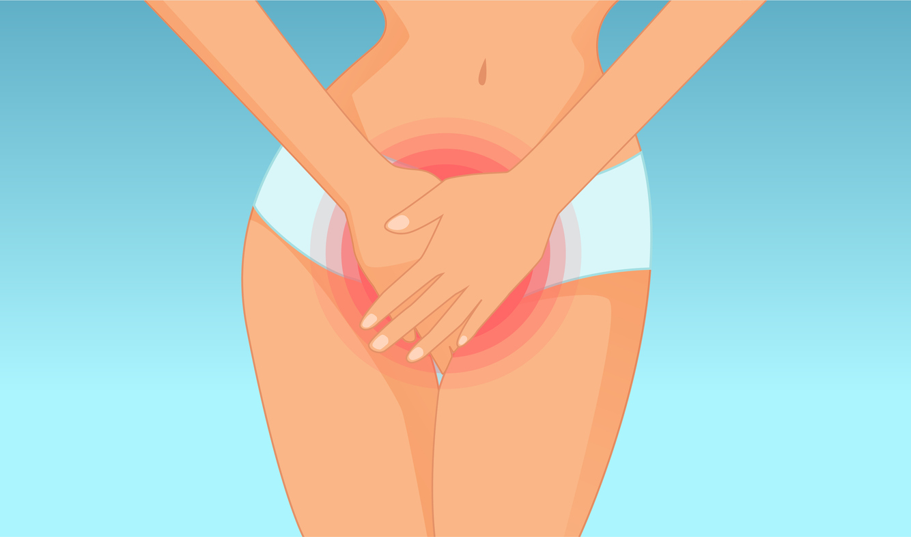

<!-- Departments Section-->
<section class="pb-0">

  <div class="container">
    <div class="row">
      <div class="col-lg-5 d-lg-block"></div>
      <div class="col-lg-7 pb-5 mb-5">
        <h1 class="text-uppercase"><span>Réjuvénation de la muqueuse vaginale</span></h1>
        Au fil du temps, des grossesses, des accouchements, de la ménopause, les tissus perdent de leur élasticité et les muscles pelviens de leur tonicité. Les muqueuses vulvo-vaginal n’échappent pas à ce phénomène. Les tissus perdent leur hydratation d’où une sécheresse vaginale, ce qui entraîne gène, irritation, inconfort, manque de plaisir intime et parfois des douleurs.
        La survenue de la ménopause peut entrainer une atrophie de toute la zone vulvaire et vaginale.
        Le docteur Addenet vous propose un traitement simple, rapide et durable avec les injections d’acide hyaluronique DESIRIAL. Injecté en sous-cutané, il va induire une synthèse des fibres de collagène favorisant ainsi l’hydratation. Il y aura également une amélioration de l’atrophie des tissus grâce à son pouvoir volumateur pour modifier l’aspect de la région de la vulve.
        Cette technique vient s’ajouter après un éventuel traitement laser si nécessaire.Déroulement d’une séance
        Lors de la séance, le docteur Addenet pratiquera des injections :

        à l’entrée du vagin, pour réhydrater les muqueuses
        sous le derme des grandes lèvres, pour restaurer les volumes, et les réhydrater.
        Pour votre confort, une anesthésie locale sera effectuée. La séance dure environ 30 minutes. Après 5 jours, vous retrouverez vos sensations lors des rapports sexuels.
        Selon les différents symptômes, le traitement sera à renouveler une fois tous les un ou deux ans.

        Les résultats continuent à s’améliorer dans les semaines qui suivent l’injection.

        Contre-indications

        femmes enceintes ou allaitantes
        problèmes cutanés, inflammatoires ou infectieux sur la zone à traiter
        Prix
        A partir de 300 euros par séance.
      </div>
    </div>

  </div>
</section>

